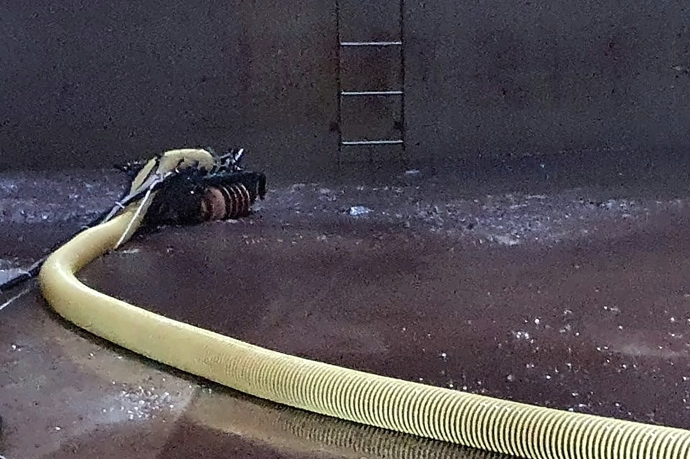

적용 사례01 / 05
설비 클리닝
탱크·Pond·배수로 안의 잔류물과 퇴적물을 제거합니다. 위험한 내부에는 흡입 로봇을 먼저 넣고, 작업자는 밖에서 조종합니다.
- Pond Cleaning 단가계약 (2020~2023)
- 4년 연속
- 로봇 투입 기록
- 4건
로봇 투입 기록 4건
- 내부 Cleaning 작업 (로봇 적용)로봇
- MDEA Storage Tank 내부 Robot Cleaning로봇
- Drum — Vessel/Drum Cleaning · Phenol로봇
- WWT Tank (ID 20,000) Tank Cleaning로봇
회사소개서(2024) 43~47쪽 · 기술소개서(2025) 25쪽
주요 수행 실적 2020~2023
- Pond Cleaning 단가계약
- 설비 내부 Cleaning로봇
- 위험물 저장탱크 개방검사 Cleaning
회사소개서(2024) 2020~2023 실적표 · 발주처 이름은 적지 않습니다